Project 01 / 03 · 2024 — Present
Minerva
platform.
A reusable, low-cost high-altitude platform for testing CubeSat payloads before orbital launch. I lead the mechanical team across the ground segment, payload shell, integration, and flight campaigns.
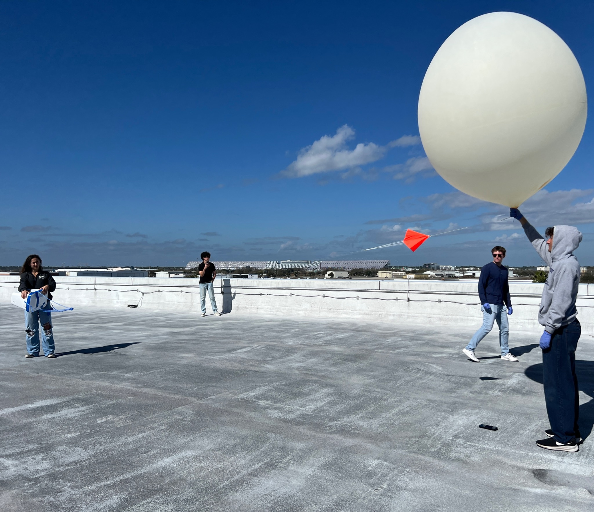
Design for the field, then learn from the flight.
Minerva makes it possible to test payload concepts in a high-altitude environment before committing to orbit. That means the designs have to be lightweight, accessible, repeatable, and practical for a student team to build and integrate.
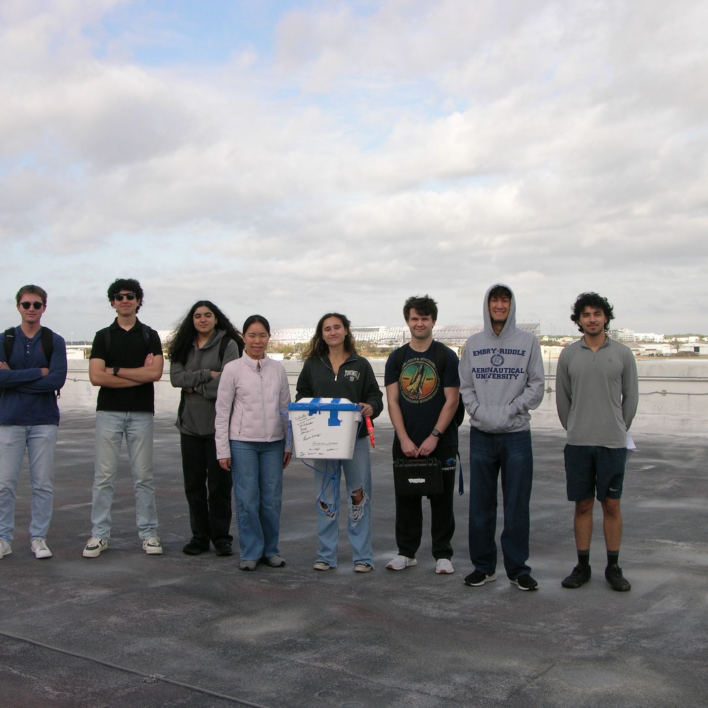
From enclosure concept to a mission-tested system.
I designed the Ground Station Receiving Unit around the real field workflow: antennas, radios, sensors, controls, and electronics needed to stay protected without becoming difficult to access. The enclosure moved through CAD, printed prototypes, hardware integration, and test.
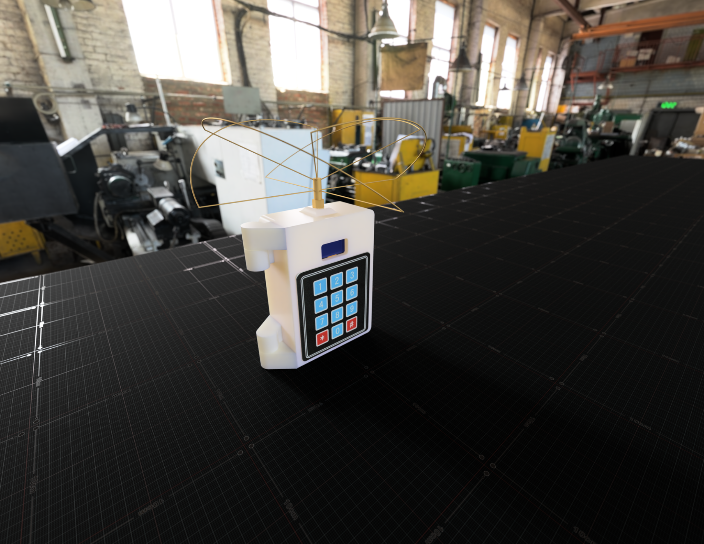
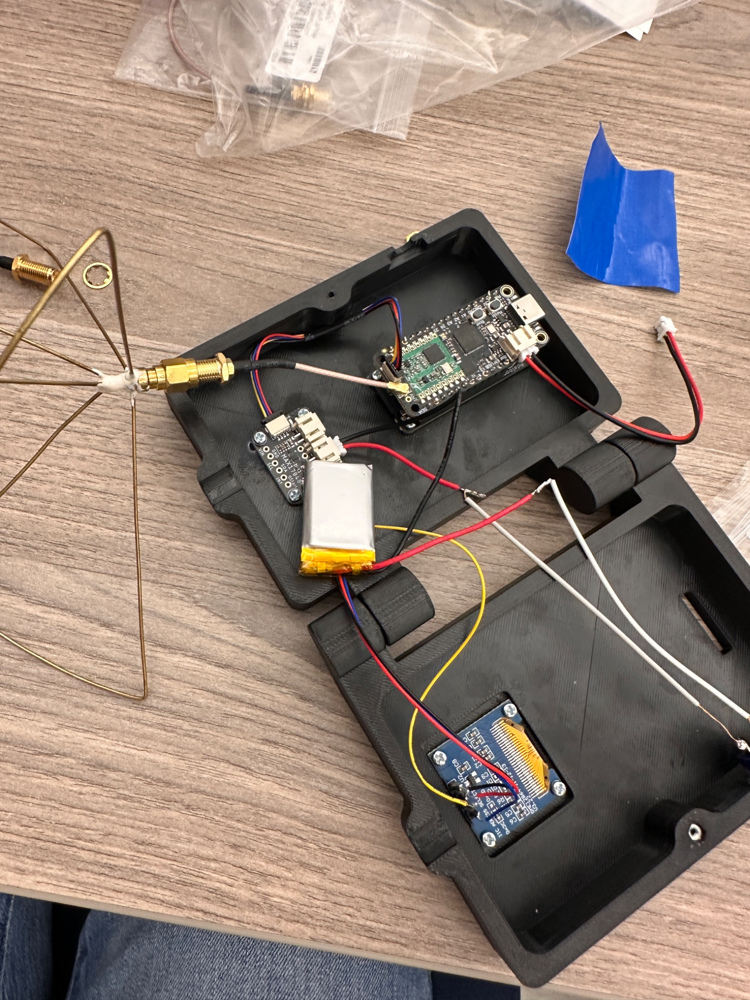
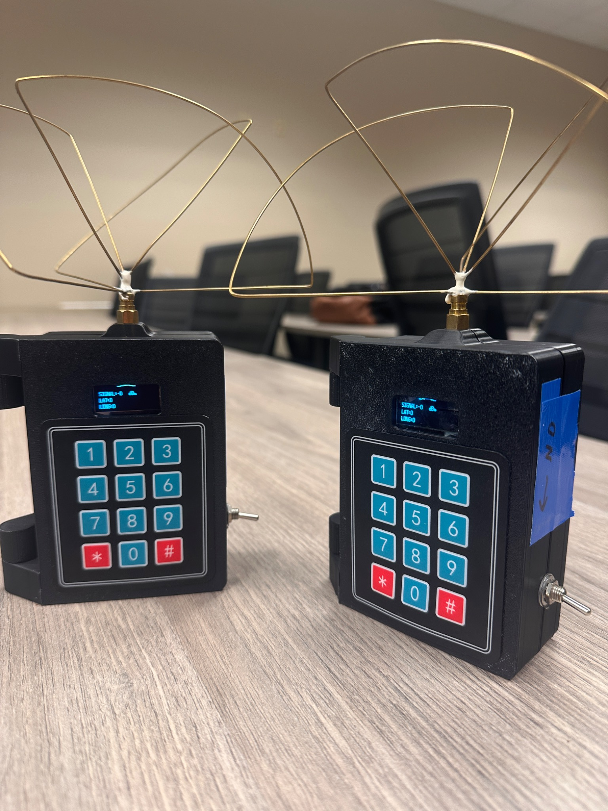
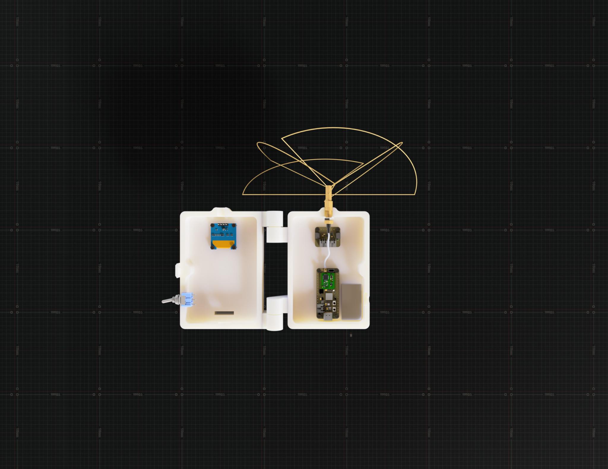
One architecture, multiple payload sizes.
The shell evolved from a first prototype into a lighter, scalable structure. The current direction replaces bulky walls with struts and supports a path from 1U to 3U configurations while keeping the payload accessible for integration.
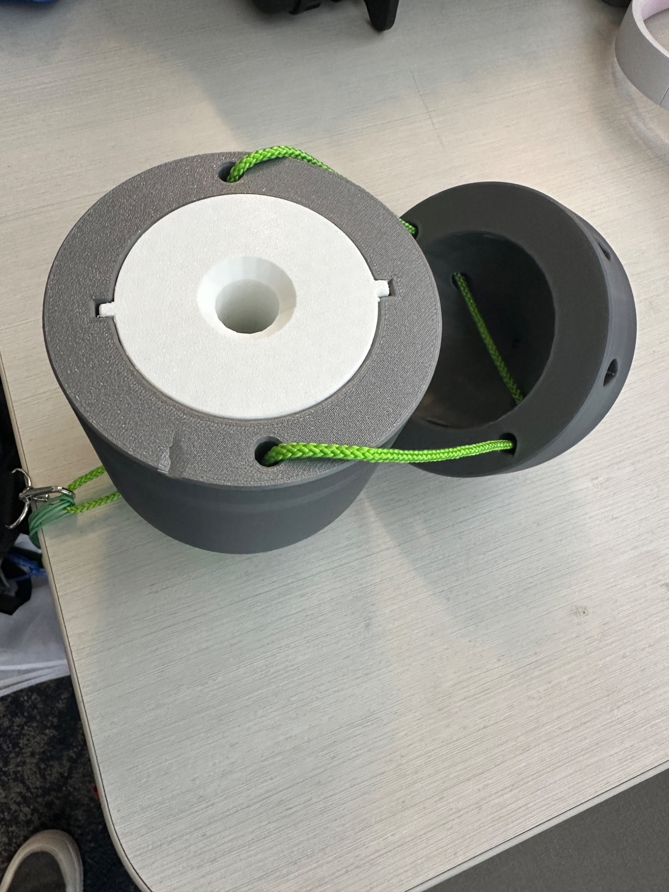
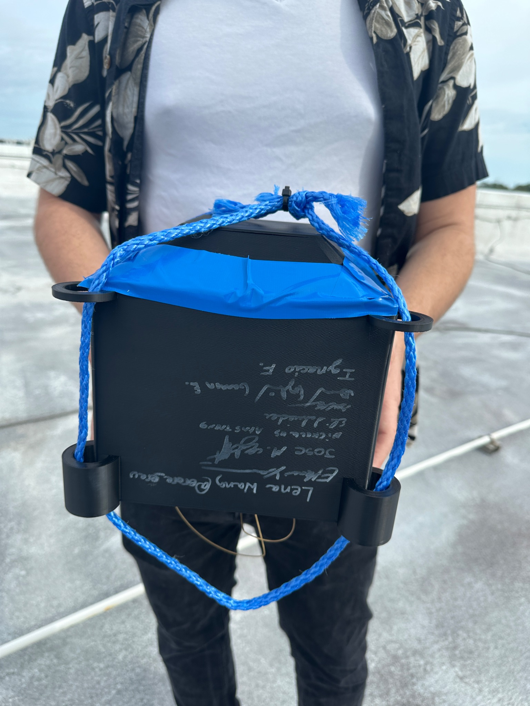
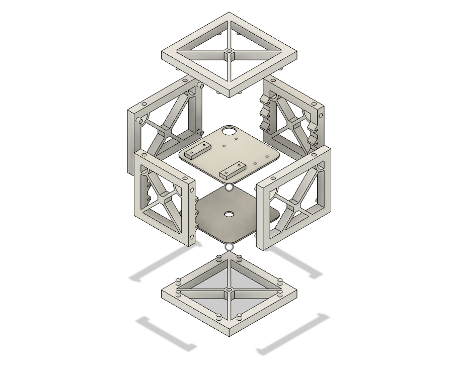
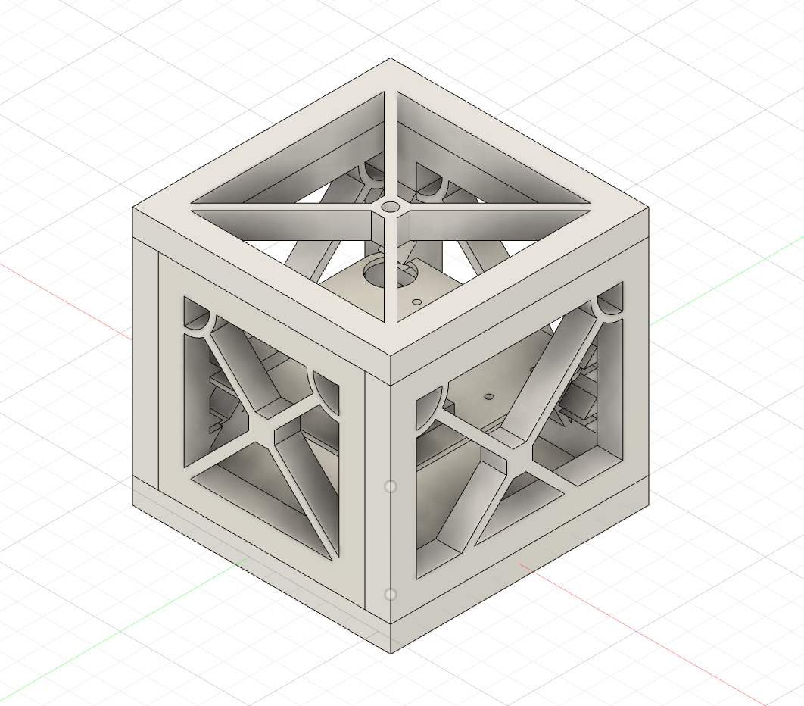
Analysis before flight.
I performed preliminary thermal and static structural simulations for a 2 kg payload at 35 km, including a −36.1°C ambient condition and 23.4 N upward lift loading at the attachment points. The models helped identify where the design needed more margin before hardware testing.
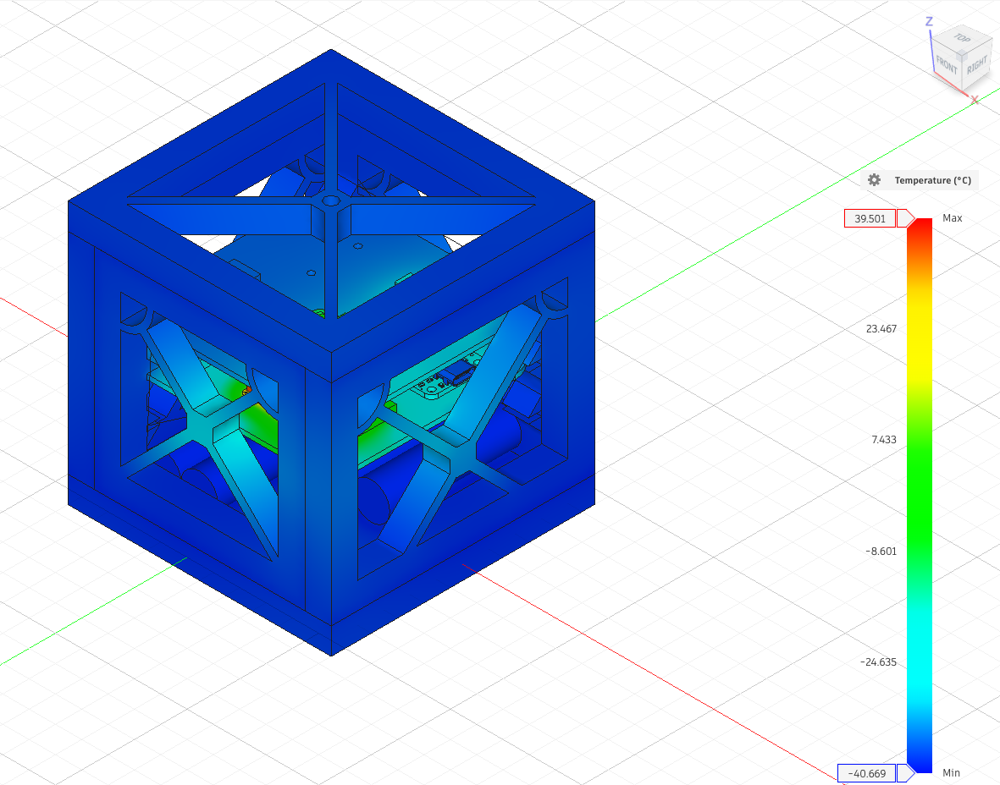
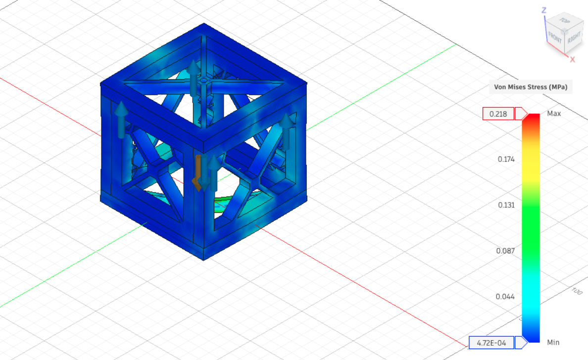
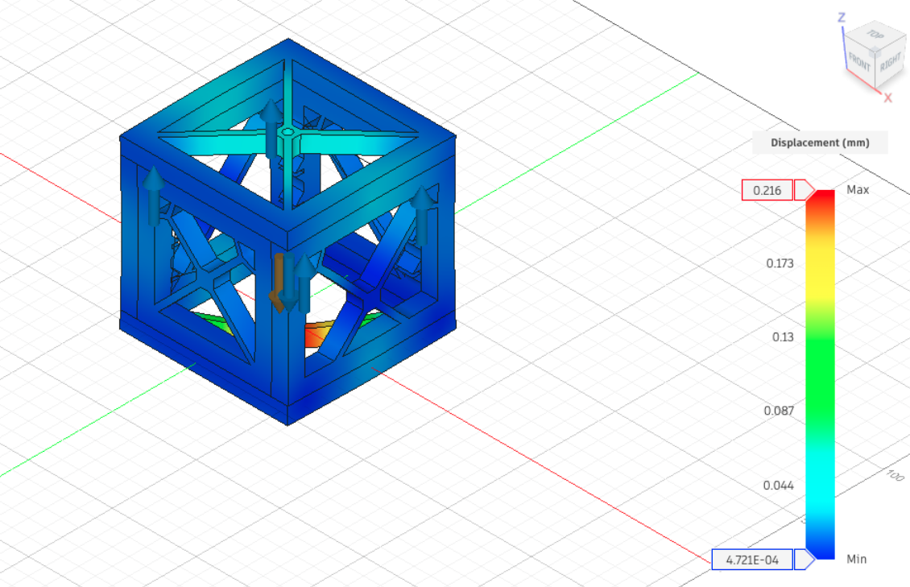
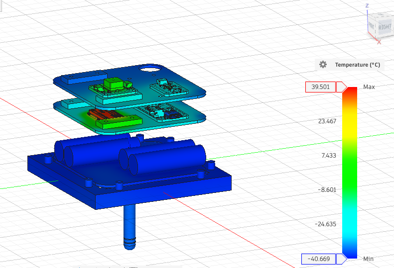